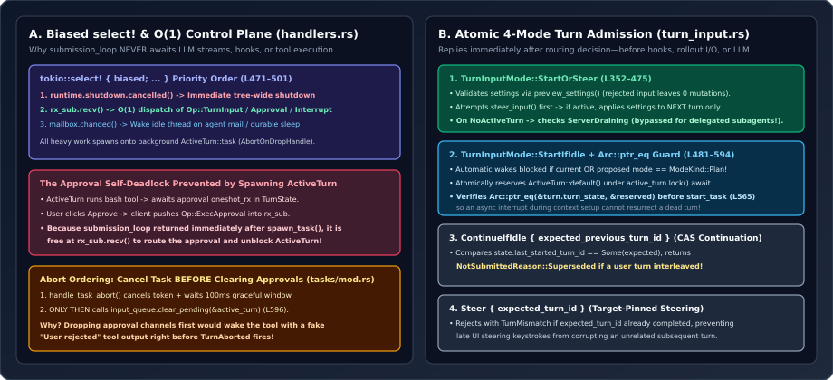

Why submission_loop Never Awaits I/O: Atomic Turn Admission & Responsive Mid-Turn Control
If your agent’s main command loop calls run_turn().await directly inside its while let Some(op) = rx.recv().await body, your agent is already broken: the first time a tool blocks waiting for an interactive user approval, the approval reply itself gets stuck behind run_turn() in the very same queue. We trace submission_loop (handlers.rs), four-mode atomic admission (turn_input.rs), and task abort ordering (tasks/mod.rs) to see how Codex separates $O(1)$ control-plane routing from background turn execution.

handlers.rs, four-mode turn admission in turn_input.rs, and race-free abort ordering in tasks/mod.rs.1. The Golden Law of submission_loop: Reply on Routing, Spawn Execution
Read the module invariant at the very top of core/src/session/turn_input.rs (lines 3–6):
“This is the one place Core decides whether submitted input starts a turn, steers an active turn, or is rejected. It replies after that decision; it does not wait for user-prompt hooks, updating the in-memory model context, rollout persistence, or sampling.”
Why is that boundary non-negotiable? Suppose a turn task $T$ takes $45\text{ s}$ of LLM streaming and shell execution, and mid-way through $T$, a sandboxed command pauses on a oneshot::Receiver waiting for Op::ExecApproval. In a single-loop design where submission_loop awaits $T$ inline, Op::ExecApproval sits unread in rx_sub until $T$ finishes—which never happens because $T$ is waiting for Op::ExecApproval!
In core/src/session/handlers.rs (lines 470–501), submission_loop runs a priority-ordered (biased) tokio::select! that executes only fast in-memory state transitions and spawns long-lived turns onto ActiveTurn::task:
loop {
let sub = tokio::select! {
biased;
_ = sess.services.local_agent_runtime.shutdown.cancelled() => {
shutdown_received = shutdown(&sess, super::new_submission_id()).await;
break;
}
sub = rx_sub.recv() => match sub {
Ok(sub) => sub,
Err(_) => break,
},
update = async {
match &mut mailbox {
Some(updates) => updates.changed().await.map(|()| *updates.borrow_and_update()),
None => std::future::pending().await,
}
} => { /* wake idle session on agent mail or durable sleep */ continue; }
};
// Match sub.op: route approvals, interrupts, steering, or spawn ActiveTurn!
}Notice the biased; directive at line 472: Tokio normally polls select! branches in pseudo-random order for fairness, which would allow a flooded rx_sub queue of 512 commands to delay a tree-wide runtime.shutdown.cancelled() signal. Pinning shutdown to branch 1 guarantees deterministic preemption on the very next poll.
2. Four-Mode Atomic Admission & Arc::ptr_eq Reservation Guards
In a real IDE or multi-agent environment, concurrent turn requests race constantly: a user presses Enter at the exact millisecond a previous turn finishes, an automatic background mail trigger wakes an idle worker while the user toggles Plan Mode, or a delayed UI steering packet arrives $20\text{ ms}$ after the turn it meant to steer already completed.
Codex funnels every entry path through four explicit TurnInputMode state machines in turn_input.rs (lines 253–297):
TurnInputMode | Race Condition Solved | Exact Source Mechanism |
|---|---|---|
StartOrSteer (L352-475) | User hits Enter without knowing if the current turn will finish 1ms earlier. | Calls steer_input first; if active, applies settings to future turns via apply_steered without mutating the running turn’s TurnContext. On NoActiveTurn, admits and calls spawn_task. |
StartIfIdle (L481-594) | Background mail or user input must start only if idle, and automatic wakes must never violate Plan Mode. | Atomically checks active_turn.is_none() and inserts an ActiveTurn::default() reservation; blocks TurnStartKind::Automatic if either current or proposed mode is ModeKind::Plan (L84-91). |
ContinueIfIdle { expected_previous_turn_id } (L274-293, 544-550) | Automatic continuation must abort if a human turn interleaved since the last turn ended. | Performs an atomic compare-and-set check against state.last_started_turn_id == Some(&expected), returning NotSubmittedReason::Superseded on mismatch. |
Steer { expected_turn_id } (L294-296) | User types a mid-turn correction right as Turn $k$ finishes and Turn $k+1$ starts. | Pins steering to expected_turn_id; rejects with TurnMismatch rather than injecting stale feedback into Turn $k+1$. |
Look closely at two subtle concurrency invariants inside turn_input.rs and tasks/mod.rs:
- Preview-Before-Commit & Pointer-Identity Reservation (
tasks/mod.rs:558-568): Before touching any state,PreparedTurnInputSettings::preparevalidates overrides viasession.preview_settings(&updates)so rejected inputs leave zero side effects. Even better: whilemaybe_start_turn_for_pending_workawaits asyncTurnContextconstruction after reservingturn_state: Arc<Mutex<TurnState>>, an interrupt or replacement turn could arrive and clearactive_turn! Before spawning, Codex verifies pointer identity:
Using// Context construction can outlive an interrupt or replacement. Do not let // start_task recreate a turn whose reservation is no longer ours. if self .active_turn .lock() .await .as_ref() .is_none_or(|turn| !Arc::ptr_eq(&turn.turn_state, &turn_state)) { return; }Arc::ptr_eqserves as a zero-allocation ABA-proof capability token: even if another newActiveTurn::default()was inserted in the meantime, itsArc<Mutex<TurnState>>has a distinct heap address, so the stale starter cleanly steps aside! - Parent-Delegated Drain Bypasses (
turn_input.rs:419-438, 516-535): When a daemon begins graceful drain (admit_turn_start() -> None), top-level client requests receiveNotSubmittedReason::ServerDraining. However, if a running parent turn delegates work to aThreadSpawnorReviewsubagent (parent_turn_id.is_some()), rejecting the child would deadlock or fail the already-admitted parent! Codex explicitly carves out parent-delegated subagent inputs from server drain rejection.
3. Cancelling Tasks Before Dropping Approvals (tasks/mod.rs)
When Op::Interrupt arrives or spawn_task replaces a running turn, how do you tear down ActiveTurn without corrupting conversation history? Inspect Session::abort_all_tasks in core/src/tasks/mod.rs (lines 573–601):
if let Some(mut active_turn) = self.take_active_turn(&reason).await {
let task = active_turn.task.take();
aborted_turn = task.is_some();
if let Some(task) = task {
self.handle_task_abort(
task,
reason.clone(),
&active_turn.turn_state,
/*error*/ None,
)
.await;
}
if aborted_turn {
active_turn_to_clear = Some(active_turn);
}
}
if let Some(active_turn) = active_turn_to_clear {
// Let interrupted tasks observe cancellation before dropping pending approvals, or an
// in-flight approval wait can surface as a model-visible rejection before TurnAborted.
self.input_queue.clear_pending(&active_turn).await;
}Formalize the two competing event orderings when a tool call is awaiting rx_approval.await inside tokio::select! alongside cancellation_token.cancelled():
By firing cancellation_token.cancel(), giving the task GRACEFULL_INTERRUPTION_TIMEOUT_MS = 100 to exit cleanly (before AbortOnDropHandle hard-aborts the Tokio task), and only then calling clear_pending, Codex guarantees that pressing Esc during an approval modal never fabricates a false user rejection in the LLM’s rollout history.
4. Questions worth answering
InterruptedTurnHistoryMarker (tasks/mod.rs:85-119) emit a developer-role message under MultiAgentVersion::V2 instead of a contextual user-role message?In Multi-Agent V2, a subagent turn can be interrupted by its parent orchestrator or mailbox preemption rather than a human user. Emitting role = "user" would falsely imply to the model that a human intervened, whereas role = "developer" accurately frames the interruption as harness-level control guidance.
StartOrSteer steers an already-running turn and also carries thread_settings overrides (e.g., changing reasoning effort), does the currently running turn mutate its TurnContext mid-flight?No! As documented on PreparedTurnInputSettings::apply_steered (turn_input.rs:216-225), persistent settings are committed to SessionState so subsequent turns inherit them, while the active turn finishes with its immutable Arc<TurnContext> snapshot intact.